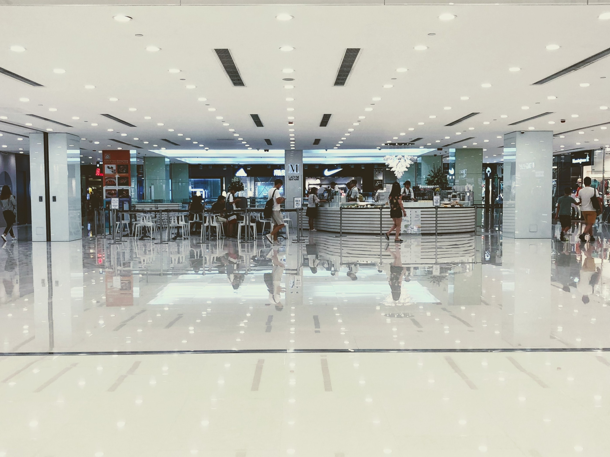

A refreshing shopping experience.An exciting shopping experience awaits you in one of Pine city's most ecologically beautiful areas. Pine city mall, the retail hub in the north of Tshwane, meets all your grocery, health, fashion, dining and lifestyle needs. With majestic mountains, the Apies River and Wonderboom Nature Reserve as the backdrop, this is a retail experience rooted in community. |
|
Pine City mall has more than 180 stores,
this trend setting shopping centre has single level
shopping and 7 entrances with wide walk was and world-class
aesthetics. With the focus on convenience, the centre offers
free flow traffic with drop off zones for cars and busses as
well as a fully integrated taxi rank. Pine City mall is the largest regional shopping centre in the country that offers unlimited FREE PARKING for our patrons with more than 3 400 parking bays, Keeping social with what’s happening on the centres Facebook and Twitter pages is hassle free while shopping with access to FREE Wi-Fi at the centre. The centre is easily accessible to shoppers from the neighbouring communities with easy access from Heinrich Road and major upgrades took place on the surrounding roads, starting from the R80 freeway through to Heinrich Avenue. |
|

|
|
|  | |
Contact usPHONE: 0860 834 834Non-SA: +27 21 938 7096 customerservices@tfg.co.za OPERATING HOURS: Monday - Saturday: 08h00 - 21h00 Sunday: 08h00 - 19h00 Public Holidays: 08h00 - 17h00 |

|